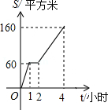
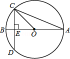
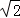
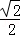
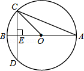
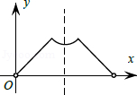
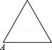
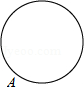
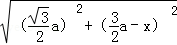

2014年北京市中考数学试题 · 选择题 第6、7、8题 · 对应解析
6．（4分）（2014•北京）园林队在某公园进行绿化，中间休息了一段时间．已知绿化面积S（单位：平方米）与工作时间t（单位：小时）的函数关系的图象如图，则休息后园林队每小时绿化面积为（ ）

A． 40平方米 B． 50平方米 C． 80平方米 D． 100平方米
考点： 函数的图象．菁优网版权所有
分析： 根据图象可得，休息后园林队2小时绿化面积为160﹣60=100平方米，然后可得绿化速度．
解答： 解：根据图象可得，休息后园林队2小时绿化面积为160﹣60=100平方米，
每小时绿化面积为100÷2=50（平方米）．
故选：B．
点评： 此题主要考查了函数图象，关键是正确理解题意，从图象中找出正确信息．
7．（4分）（2014•北京）如图，圆O的直径AB垂直于弦CD，垂足是E，∠A=22.5°，OC=4，CD的长为（ ）

A． 2

B． 4 C． 4 D． 8考点： 垂径定理；等腰直角三角形；圆周角定理．菁优网版权所有
分析： 根据圆周角定理得∠BOC=2∠A=45°，由于圆O的直径AB垂直于弦CD，根据垂径定理得CE=DE，且可判断△OCE为等腰直角三角形，所以CE=

OC=2，然后利用CD=2CE进行计算．
解答： 解：∵∠A=22.5°，
∴∠BOC=2∠A=45°，
∵圆O的直径AB垂直于弦CD，
∴CE=DE，△OCE为等腰直角三角形，
∴CE=OC=2，
∴CD=2CE=4．
故选C．

点评： 本题考查了圆周角定理：在同圆或等圆中，同弧或等弧所对的圆周角相等，都等于这条弧所对的圆心角的一半．也考查了等腰直角三角形的性质和垂径定理．
8．（4分）（2014•北京）已知点A为某封闭图形边界上一定点，动点P从点A出发，沿其边界顺时针匀速运动一周．设点P运动的时间为x，线段AP的长为y．表示y与x的函数关系的图象大致如图，则该封闭图形可能是（ ）

A．

B． C． D．
考点： 动点问题的函数图象．菁优网版权所有
分析： 根据等边三角形，菱形，正方形，圆的性质，分析得到y随x的增大的变化关系，然后选择答案即可．
解答： 解：A、等边三角形，点P在开始与结束的两边上直线变化，
在点A的对边上时，设等边三角形的边长为a，
则y=

（a＜x＜2a），符合题干图象；B、菱形，点P在开始与结束的两边上直线变化，
在另两边上时，都是先变速减小，再变速增加，题干图象不符合；
C、正方形，点P在开始与结束的两边上直线变化，
在另两边上，先变速增加至∠A的对角顶点，再变速减小至另一顶点，题干图象不符合；
D、圆，AP的长度，先变速增加至AP为直径，然后再变速减小至点P回到点A，题干图象不符合．
故选A．
点评： 本题考查了动点问题函数图象，熟练掌握等边三角形，菱形，正方形以及圆的性质，理清点P在各边时AP的长度的变化情况是解题的关键．
二、填空题（本题共16分，每小题4分）